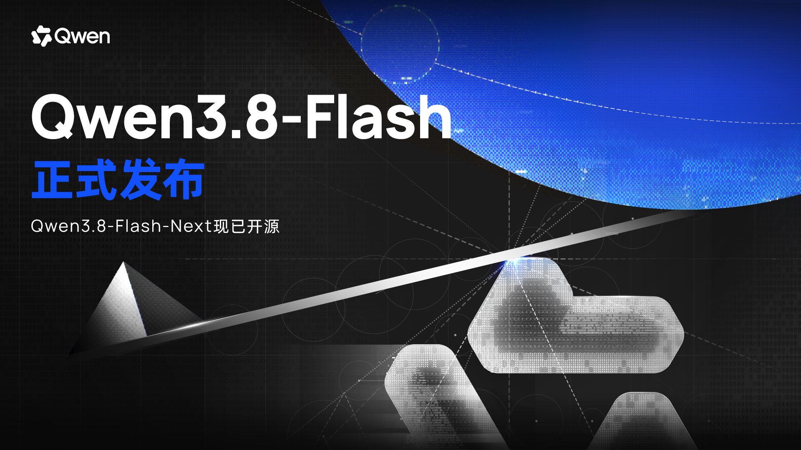

Qwen3.8 Family

家族成员
| 模型 | 参数 / 架构 | 模态 | API context | 当前定位 |
|---|---|---|---|---|
| Qwen3.8-Max | 2.4T MoE | text / image / video → text | 1M | 闭源旗舰，复杂编程、办公和专业任务 |
| Qwen3.8-Flash | Flash-Next 公开架构为 125B core / 6B active + 51B N-gram + 4B MTP | text / image / video → text | 1M | 高并发、工具工作流与 coding 默认款 |
| Qwen3.8-2.4T-A95B | 2.4T / 95B active MoE | 当前 API 页面列 text → text | 1M | Max 同尺度的开放权重旗舰 |
| Qwen3.8-27B | 27B Dense | text / image / video → text | 1M | 可本地部署的原生视觉语言主线模型 |
API 价格快照
价格来自 2026-08-27 模型市场页面，单位为人民币 / MTok。
| 模型 | 输入 | 输出 | 缓存命中 |
|---|---|---|---|
| Qwen3.8-Max | ¥12 | ¥36 | ¥1.5 |
| Qwen3.8-Flash | ¥0.8 | ¥2.7 | ¥0.1 |
| Qwen3.8-2.4T-A95B | ¥12 | ¥36 | ¥1.5 |
| Qwen3.8-27B | ¥3 | ¥12 | ¥0.6 |
我对产品线的判断
Qwen3.8 把同一代模型拆成三类工程约束：
- 能力上限：Max / 2.4T-A95B 用 2.4T 总容量承接长程专业任务。
- 服务 Pareto：Flash 通过 6B active、QSA、N-gram embedding 和 1M serving 面向高并发 agent。
- 私有部署：27B Dense 保留多模态与工具能力，让单机或小集群部署不必承担超大 MoE 的通信复杂度。
这比按“文本模型 / 多模态模型”分目录更有解释力：同一正代家族内部已经原生多模态，真正的支线边界应看它是否形成独立任务路线和独立命名体系。
官方资料
- Qwen3.8 官方资料索引
- Qwen3.8-Flash 模型市场页
- Qwen3.8-Max 模型市场页
- Qwen3.8-2.4T-A95B 模型市场页
- Qwen3.8-27B 模型市场页
- Qwen3.8-Flash-Next 官方技术博客
- 官方开放权重模型卡